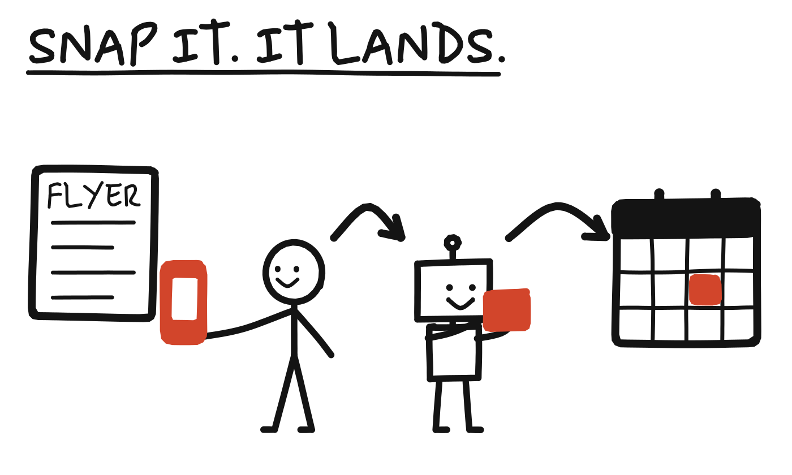

Rough draft
For Amber
Never miss the next one
Set it up once, in about 20 minutes. After that, catching a date takes one photo.

Amber, you spend your days taking care of people's hearts. That takes all of your focus.
So the small dates slip behind you. A school meeting. A form. A pickup.
That's not a flaw. Your attention is where it should be.
And you already know the fix. Nobody in a hospital keeps track of a heart from memory. There's a monitor, and it beeps.
Let's put a monitor on your family's dates.
Why dates slip
It's the pile.
A survey of 2,004 parents (Yahoo, 2024) found the average parent gets about 4 emails a day about their kids, school and activities. About 80 a month. That's the average. You have three kids.

One date never makes it from the pile to your calendar. That's the gap. A calendar can only beep about what's on it.
So there are two jobs: one calendar the whole family shares, and one photo to get each date onto it.
Set it up once
We're both Montessori kids, so I'll keep the talking short. Do it, and your phone tells you if you got it right. Tap each box as you finish.

Tap the button, sign in with your personal Gmail (not a hospital account), and start a family group. Google gives it a shared calendar called "Family," automatically.
Invite your husband by email, and any kid 13 or older with a phone. They open the email and tap "accept."
Younger kid, or no phone? Skip the invite. Put their name first on their events ("Name: dentist") and your phone buzzes for them.
Tonight, just your phone and your husband's. The kids' phones can wait for the weekend.
Get the Google Calendar app and sign in. In the app, open Settings, tap Family, and add two notifications: 1 day before and 2 hours before. Add 1 day before for all-day events too.
Each phone is set once. It doesn't copy from yours. If the app asks to send notifications, say yes.
Add an event called TEST to the Family calendar, starting 2 hours and 5 minutes from now.
In 5 minutes, both phones should buzz. One didn't? Redo step 3 on that phone. Then delete TEST.
Every day: one photo
Whoever sees a date, catches it. Right then.

First, teach ChatGPT once
Tap "Copy this," open ChatGPT, paste, send. You only do this one time.
From then on
- Photo the flyer, or screenshot the email or text
- In ChatGPT, tap +, add it, send
- Tap the link it gives you
- Check the time, choose "Family," Save
Link acting up? ChatGPT also wrote the event out. Type it into the Google Calendar app and choose "Family." If ChatGPT ever forgets the routine, paste the box above again.
Your husband doesn't use ChatGPT? He adds it straight in the app, or texts you the photo.
Sunday: ten minutes
At dinner, open the week in the app and read it out loud. Anything that slipped past gets caught here.
Me too
I've missed plenty. The birthday I remembered at the last minute. The anniversary that snuck up on me. A bill I forgot to pay. Something I was supposed to pick up and didn't.
So I stopped trusting my memory. Last month the city gave me a date to put my old couch out. I had AI put it on my calendar with two buzzes. Done.
The people who look organized just have something beeping for them.
Tonight
Steps 1 to 4. When both phones buzz, text me.
The calendar remembers. You just catch it.
Daegan
Bonus ChatGPT tricks
Tap one to open it.
It reads any photo
Permission slips, team schedules, the lunch menu, a screenshot of a group text. Send it and ask:
It can check your email (paid ChatGPT)
Connect Gmail in ChatGPT's settings once. Then ask:
It can add events for you (paid ChatGPT)
Connect Google Calendar in ChatGPT's settings. If it asks permission to edit your events, it may be able to put dates on your calendar itself. Check each one landed on "Family."
It can nudge you every Sunday (paid ChatGPT)
Turn on ChatGPT's notifications on your phone so the reminder reaches you.